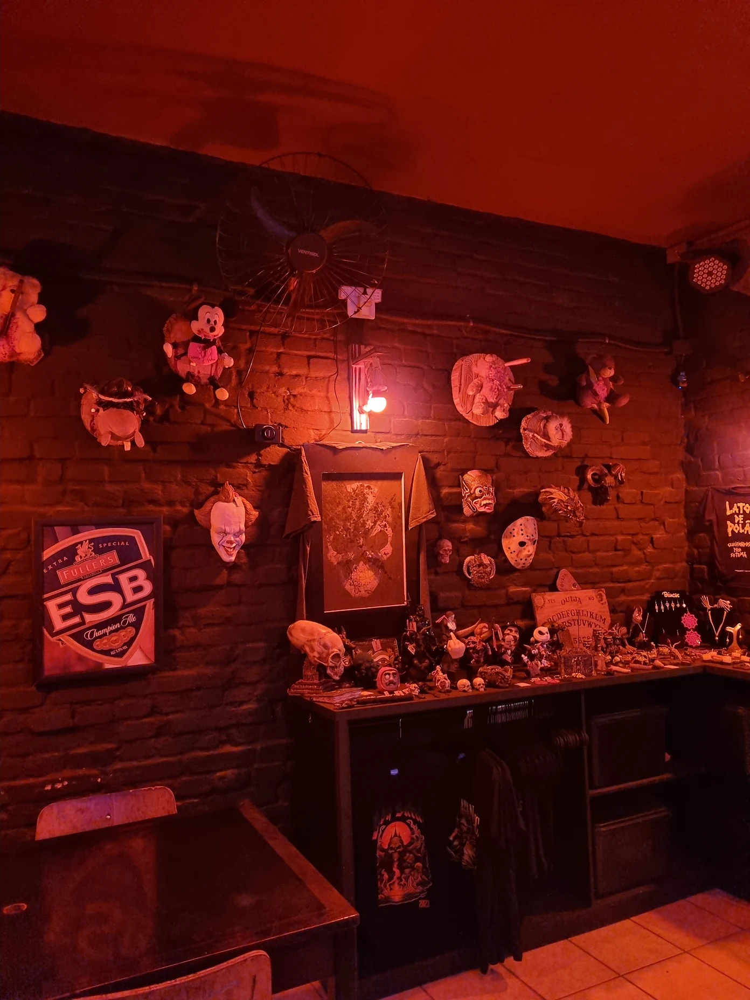

Alguns desses locais eu já fui e frequentei durante um tempo, para conhecer eu recomendo, mas tudo depende do seu humor e personalidade, caso seja uma pessoa que goste de sair, recomendo ir pelo menos uma vez em cada local, caso seja caseiro, recomendo pesquisar sobre a subcultura no conforto da sua casa, com uma ambientação temática!

Patrimônio histórico da cidade de São Paulo, é a principal casa noturna da subcultra, com 42 anos de história para contar, muito do gótico brasileiro se consolidou no Madame. Ótimo lugar se você gosta de uma noite agitada, porém para conversar e conhecer pessoas novas, não recomendo por causa do som muito alto.
Conheça mais do Madame Club!
Bar localizado em Santo André, raramente eles tocam músicas de outros gêneros do rock, porém o foco é o Darkwave, local ótimo para conversar e comer, pois o dono trabalhou como chefe de cozinha, se não me engano, por 20 anos de sua carreira.
Conheça mais do Baby Satan
Local muito similar ao Madame, localizado em Santo André, discotecagem com foco na música gótica e ele não é tão conhecido como o Madame, então as vezes que fui estava mais vazio e dava para conversar com as outras pessoas.
Conheça mais do Electric ClubO mais interessante de todos, pois lá é uma hamburgueria localizada na vila de Paranapiacaba, que de vez em quando realiza flashes mobs góticos, o acesso é mais remoto devido a localização, porém vale a pena aproveitar um dia na vila para conhecê-la, pois é um local histórico e ainda entender mais sobre a subcultura gótica
Conheça mais do Flash Mob GóticoDos mesmos donos do Madame, foi reinaugurado em 2024 e acredito que seja maior que o Madame, nunca fui, mas possui mais áreas para conversar e descansar, além de apreciar a decoração.
Conheça mais sobre o Complexo DJ Club